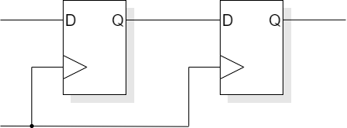
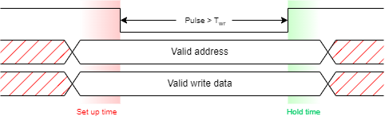

Pages marked ☆ should be revision from COMP22111.
Next session's notes: timing.
The synchronous model is an enormous simplification in designing working Finite State Machines.
For this to work there are certain assumptions.
In the synchronous model it is assumed that one flip-flop can feed another.
Which means this (points to figure on right) is possible:
assuming the clock reaches both (all) devices ‘simultaneously’.
i.e. minimal clock skew.
It is important to meet all the flip-flop timing constraints if a circuit is to work under all circumstances. However observe:
If a set up violation is introduced (oops!) it can be avoided by increasing the clock period†. A hold-time violation is fatal however, since nothing can be done externally.
Don't worry too much; most CAD tools will look for possible hold violations and add some buffers (‘do nothing’ logic) to slow down signals which would otherwise be too fast. You might see this in synthesis reports.
†Assuming the application can tolerate the slow-down.
In practice clock arrival times have to be ‘close enough’.
These properties mean that clock signals require buffers … but that's okay providing the skew is still kept small.
The clock tree needs to be well balanced, taking into consideration:
This is a big task for ‘Place and Route’: fortunately, tools will help with this.
The classic ‘H-tree’ structure is one method of trying to distribute a clock across a chip with minimal skew. Note, all paths are (notionally) the same length.
Reset activation is not normally a timing problem because reset will be present for some time. The removal of reset can be a problem though. Imagine reset being removed in one part of a state machine but not quite making it to another. This could cause the machine to enter an illegal state. It is sometimes necessary to synchronise an otherwise asynchronous reset to prevent this.
Modern FPGAs have a dedicated set of clock distribution networks built onto the chip which deliver clock signals to all flip-flops with minimal skew. There are typically a small number (e.g. four) of these networks so that a number of different clocks may be used. These networks can only be used for clocking flip-flops.
Timing closure is, basically, making the logic fit within the desired clock period.
This can be difficult to determine, exactly. It is set by the critical path. From a HDL source this requires at least technology mapping into gates. Accuracy requires knowledge of gate strengths, wire load and layout detail. However it is cost effective to estimate timing early to check that the implementation strategy is feasible. Even pre-layout the tools usually give an estimate of the wire loads to yield a more realistic result.
Simulation can indicate whether a particular sequence will fail at a particular clock speed. This is a reasonable guide but is not reliable unless either the critical path is known (and exercised) or the simulation is exhaustive.
Example: a ripple carry adder. Simulation with random inputs is unlikely to find the slowest case, when a carry propagates across the whole width.
In this case ‘static’ means independent of input state. The delays through each combinatorial path can be summed and compared with the design objective. This reveals the critical path or the ‘slack’ in all logic paths. In the latter case ‘negative slack’ will reveal where the logic is too slow.
The great advantage of static analysis is its low computational complexity. The disadvantage is that the ‘critical path’ may be a false path, i.e. one whose switching sequence cannot occur in reality.
In general STA will identify anything which is significantly bad at low cost.
No, of course it doesn't; where would the fun be in that?
Seriously, what is ‘fast enough’? In many applications there will be a real-time constraint to be met but exceeding it brings no additional benefit. In other applications (e.g. microprocessors) any performance increase is to be seized.
How close are you to your target? If you're ‘miles off’ you need to restructure your architecture to increase parallelism. This may be done by:
If close to target you might be able to identify and recode critical modules.
Tools can also be instructed to optimise for certain criteria, such as speed, power, area, … Normally gains in one category are paid for in others.
Many cells come in families with various drive strengths. Increasing the drive will speed up an output (and slow the input, and probably cost power).
It may be possible to use different cell families to improve performance. E.g.
The process may need repeating. After the wiring is factored in things (probably) have slowed down. Buffers may be added which increase the latency but speed up edges.
Hopefully this process converges on something acceptable.
Optimise early to avoid wasting effort on ‘hopeless’ designs. Layout and extraction all take time and more accurate modelling also takes longer.
(Not something obtained with a simple design flow.)
This is a technique to get a bit more performance out of a pipeline which is not perfectly balanced.
Reminder: a balanced pipeline is one where the the critical paths of all pipeline stages are (more or less) the same.
In the first example the critical path is constraining the clock period; the second stage will evaluate before the result is needed and the result is delayed by 200 ps at the register input. This is the ‘normal’ type of circuit.
The second example deliberately introduces some skew into the clock to one stage. If clocked at 1 GHz this would mean that there was a 100 ps wait for this register but, because it was clocked ‘late’ the delay to the next register would be smaller (only 100 ps, not 200 ps in the example). The clock period can now be reduced to 900 ps and all the constraints can still be met; the pipeline goes 11% faster.
This is not a trivial process however; there are difficulties:
Why not ‘simply’ repartition the logic stages to reduce
the worst critical path?
Usually this approach would be a better solution – and less
stressful when persuading the logic to synthesize at the desired
speed. However this is not always possible. Usually this will be due
to the inclusion of some macrocell which cannot sensibly be
subdivided: a typical example of this would be a memory (SRAM)
block which has been synthesized by the ASIC foundry.
Rather than use master/slave flip-flops can use smaller, transparent latches. These are enabled by alternating, non-overlapping clocks.
Basically the same principle as time stealing but exploiting transparent latches rather than edge-triggered flip-flops (see “Two-phase clocks”).
Because a latch is transparent for some time it allows an early-arriving result into the next stage before an edge-triggered device would. Thus any time spare in one stage will be exploited – automatically – by the next stage.
[Don't get too concerned about the names of these techniques; concentrate on the principle!]
A “wave pipeline” is a pipeline without latches to re-synchronise data elements; inputs change periodically and “waves” of evaluation activity chase each other through the logic.
Wave pipelining is mentioned here to for completeness rather than as a suggested technique.
†Read as “nearly impossible”.
Synchronous design is a Good Thing
However it is not always possible to have one clock across an SoC.
It's only meaningful to talk about frequency with respect to repetitive signals.
The frequency of a clock is the reciprocal of its period. f = 1⁄T
With two or more signals there may be a phase relationship.
Same frequency, different phase.
Harmonic frequencies (phase relationship is fixed)
Non-harmonic frequencies: phase relationship drifts
It is increasingly common to have blocks running at different frequencies. This is sometimes referred to as GALS Globally Asynchronous Locally Synchronous.
Or possibly the same frequency, but ‘uncertain’ phase.
The normal clock source for digital logic is a crystal-controlled oscillator. These use vibrations in a carefully machined (piezo electric, usually quartz) crystal to stabilise an electrical oscillator circuit. Without any special care a frequency within about 50ppm† is usual. If it matters, much greater stability is, of course, achievable as is demonstrated by ‘quartz clocks’.
†Equivalent to about 4 s error per day.
The clock network is a significant source of power dissipation. The power used is (effectively) proportional to clock frequency. Thus it makes no sense to clock a circuit faster than is necessary. Clock gating may be introduced to stop clocks when a block is unused – but this should be done with caution!
There are various possibilities for relationships between clocks.
There is also the need for arbitration: which receiver cycle did the data arrive in?
A model flip-flop
The dangers in a metastable state lie in that it can be interpreted as different values by different inputs, or at different times. A possible metastable flip-flop should only go to one place.
Some cell libraries provide flip-flops specifically to address this problem. They can still go metastable but they have a ‘steeper hill’ so they tend to resolve more quickly. This is done by strengthening the gain internally, which makes them slower (longer propagation delay) and probably raises power consumption. Use them in the synchroniser role, if available, otherwise stick to the ‘standard’ flip-flop.
A typical synchroniser looks like this:
Operation is simple.
If the first flip-flop latches a valid level the second one copies this one clock period later.
Else the first flip-flop may go metastable but has a whole clock period to resolve to a digital state. As the violation is caused by an input data transition the chosen state will determine whether the data changed before or after the clock.
If determined that the data changed ‘after’ the clock then it will be picked up on the next clock edge.
The first flip-flop probably doesn't remain metastable for a whole clock period. The probability depends on the properties of the flip-flop and the length of the clock period.
If the flip-flop doesn't resolve in time it will be forced to a digital state on the next clock edge – but the second flip-flop may go metastable.
Paranoid designers may add more flip-flops. Each multiplies the probability of remaining metastable by the same small number, thus if (say) 1 in 106 is too high, go for 1 in 1012 , 1 in 1018 , etc. Each flip-flop (delay) also increases the latency, of course.
There is no certain guarantee that this will always work. However the probability of failure can be made very small.
[Remember that 3 GHz translates to 3×109 clocks/second or about 1019/century.]
There is no need to synchronise every signal crossing a boundary explicitly.
If the request is synchronised, accompanying data will have had plenty of time to arrive.
When crossing a clock boundary, there is always:
The system we are constructing has been kept as synchronous as possible. Thus the master frequency is set by the pixel clock and the drawing engine is run at the same rate. There is, however, an asynchronous input in terms of the processor bus, which is governed by a completely separate clock.
The bus arriving from the ARM is an ‘asynchronous’ bus. In this context this means there is no clock signal within the bus. Timing is provided by pulses on control signals, the length of which is governed by the bus master (i.e. the processor). This type of bus is a typical – arguably ‘old fashioned’ – interface used by many memory and I/O devices. The various parameter registers are therefore built as transparent latches, enabled by the strobe pulses.
Most of the time, writing to the interface has no effect on the clocked part of the circuit. Parameters are set up but not yet read. This happens on ‘software’ timescales where it is easy to be confident the values will be stable long before they are used. Synchronization is therefore unnecessary.
When a command is issued a signal must cross into the clocked domain. In this case the synchroniser shown here is used.
always @ (posedge uP_nwr, posedge cmd_ack)
if (cmd_ack) go <= 0;
else
if (!uP_ncs && (uP_address == 6`h08)) go <= 1;
always @ (posedge clk, posedge cmd_ack)
if (cmd_ack) begin go_1 <= 0; cmd_req <= 0; end
else begin go_1 <= go; cmd_req <= go_1; end
The operation is triggered by the end of the write pulse which allows time for data to be propagated through transparent latches in the same cycle. cmd_ack is a one clock long pulse in response to an accepted cmp_req from the synchronous side.
There is an assumption that a second write will not occur ‘too soon’. This can be prevented by, for example, checking the ‘go’ signal in software as a status bit.
A status bit could be cleared at an arbitrary time unless it is resynchronised for the processor. This is difficult without access to the processor's clock. However if read into a processor register the bit is likely to pass through several flip-flops and thus have settled into some digital state by the time it is read and tested. If sampled in a polling loop it can be deduced that, if a bit is read just as it changes, it doesn't matter how it's interpreted.
The other possible output for such a bit is as an interrupt signal. Interrupts are routinely regarded as asynchronous and fed through synchronisers on entry to a processor. Any additional latency is small compared with the software run time.
It is possible to enter an asynchronous domain with 100% reliability using an arbiter or mutual exclusion element. This is a cell which determines which of its (usually two) inputs arrived ‘first’. It achieves reliability by detecting metastability and delaying its decision until this is resolved.
Unfortunately the time taken to make a decision is unbounded so this process could always take more than a clock period – however long that is.
Synchronisers introduce latency and may ‘cripple’ performance:
More buffers reduce waiting time
Various solutions are possible, depending on requirements & complexity.
Synchronisation introduces latency. The probability of error decreases (exponentially) with the time allowed to resolve any metastability. This also slows down the communications.
The details may vary and there may be the possibility to optimise a bit but the point to note is that the complete handshake needs to synchronise twice – once on its way into each clock domain – so the overall cycle time is slow. The exact latency may vary depending on the clock's frequencies and phase difference.
** This could animate, too. **Removing the flip-flops delaying a⇒b and w⇒x would reduce the cycle time. ** DANGER ** If, as is likely, w (for example) is generated from combinatorial logic it could glitch to the wrong value during evaluation. If such a glitch is captured by the other clock, all sorts of problems may occur! The flip-flops filter out any glitches.
Sometimes it is expedient to have communications between units with notionally the ‘same’ clock frequency although they have different clock sources. Examples may include synchronous serial communication such as PCIe or S-ATA. However, no two clocks will exactly match so one end of the link will be faster than the other.
A mechanism to allow for this disparity is for the transmitter to insert ‘comma’ symbols into the communications stream. These carry no data, hence imposing a small overhead. The receiver maintains a FIFO of incoming symbols which it is synchronising to its own clock. If its clock is a little slower the FIFO will gradually fill; if its clock is a little faster the FIFO will gradually empty. When a comma symbol is seen, if the FIFO is getting close to full the comma is discarded, saving some time and catching up; conversely, if the FIFO is close to empty the comma allows the receiver a slight pause. In this way the FIFO can be kept close to half-full at all times and the communication maintained seamlessly.
A circuit can pass one ‘thing’ per clock cycle to another circuit in the same clock domain.
Synchronising latency will apply to every ‘thing’ passed across an interface between clock domains. This reduces the communication bandwidth considerably (in things/cycle).
Here are a couple of (related) techniques to achieve higher bandwidth across the interface.
Pack many bytes into a ‘thing’. Fill up a ‘bucket’ (RAM) of data then signal its transfer at the end. There is one synchronisation penalty for the bucketload which is shared by all the data. The disadvantage of this is that the latency is increased because the bucket must be filled then the transfer requested, so the first datum takes longer to be received (although they come close together after that.
As above but double buffer. Fill up a bucket and notify the receiver that it's ready. Whilst that is synchronising and being emptied, fill up the next one. The disadvantage is that more (independent) RAMs are needed; the advantage is increased bandwidth, closer to the maximum rate (which is the slower of the corresponding processes).
A decoupling FIFO can extend the concept further. Conceptually this is a bit harder to conceive. Think of a dual-port RAM (you could build it out of flip-flops) where the transmitter writes to successive locations and the receiver subsequently reads them at its own rate. Every time a write completes a ‘counter’ is incremented (Tx clock) and when a read completes it is decremented (Rx clock). The control logic does need a synchroniser but synchronisation is not necessary every cycle: for example if the FIFO contains four data, following a read it contains at least three (more if writes are ongoing) so no need to check before reading the next one. This can be complicated to build but can offer close to maximum throughput with close to minimum latency.
Increasing frequency is more difficult: use a Phase-Locked Loop (PLL)
These include some mixed-signal (analogue) components …
… but can usually be bought-in from a specialist designer.
A typical clock source will be a crystal controlled oscillator. These are cheap and quite precise. Frequencies of the order 1-100 MHz 50ppm are readily available. However modern computers are typically clocked much faster.
So, the usual ploy is to supply a stable frequency (say 20 MHz) to the chip and then multiply this on board to the desired clock rate.
A bonus from this strategy is that the clock multiplier is digital and can be controlled (e.g. in software) allowing a trade-off between performance and power consumption.
Another strategy is to reduce the clock rate – to reduce power dissipation – if the chip is becoming too hot.
If part of a device is not in use, its clock may be stopped (‘gated’). This is more power-economic than simply ‘disabling’ the registers because it prevents (parts of) the clock tree from switching.
However there are several concomitant hazards and it's easy to introduce unpleasant clock skew or even glitches if care is not exercised. Don't do this ‘by hand’ until you've lots of experience!
This is an option best left to the tools (if available). Note that adding gating may compromise peak performance so is not always desirable.
A PLL is a machine capable of matching the frequency of an input signal.
Consider a television set. It must display images at the same rate as
they are broadcast. Thus it needs synchronisation information so that
it can adjust its internal timing to match the transmitter. Of
course, in modern sets at these slow speeds this can be done digitally
by varying the number of ‘local’ clock cycles in each
line, frame, etc. slightly.
You can see this in the lab. (phase 3) with the
‘sync.’ signals running to(wards) the monitor.
The figure above shows a clock multiplier which works by matching a division of an output clock to an input reference.
A typical phase comparator produces pulses on its outputs which indicate which input edge came first. These need integrating (smoothing) to produce a voltage which is (approximately) stable over many clock periods.
An oscillator which runs ‘naturally’ in a certain range of frequencies which is ‘tuned’ by an analogue input voltage.
Because a PLL circuit is controlled by feedback its output frequency will vary slightly around the nominal frequency. This contributes to clock jitter – the perceived variation in clock frequency. Jitter is a Bad Thing because the logic must always evaluate within the shortest clock period (not the average) and the more variation there is the shorter this minimum time will be.
A collection of other timing-related issues.
A number of tools exist to assist with timing closure. Many of these are only appropriate when a physical realisation of the chip is available.
A Static Timing Analyser (introduced earlier) will give an estimate of the critical path in a system by searching all paths between clocked registers and finding the slowest. This then sets the ‘standard’ for other logic speeds; there is (usually) no point in optimising any logic paths already faster than the critical path.
The delay of the critical path will depend on the number of serial logic gates, their type, the fanout and other factors affecting the electrical load (particularly wire lengths) and their output impedance or ‘drive strength’. All these factors go into ‘the mix’ when attempting to optimise the circuit.
Typically, synthesis tools will have options which allow the engineer to put more importance on speed, size, power etc. It may be that a circuit can be optimised for speed but this may result in it being larger or more power hungry.
Edge speeds are the time it takes a digital circuit to switch between states. They depend on the outputting gates drive and the (capacitive) load it needs to switch. Edges which are ‘too slow’ may introduce problems such as:
Tools are available to identify any slow† edges, possibly for further attention.
†The user can define what “slow” means.
With ‘challenging’ speed targets a flip-flop may be designed with a data hold time longer than its propagation delay. With such it would be dangerous to connect one flip-flop output directly to another's input. Any logic in-between will naturally act as an additional delay and help meet the true constraints. Hold-time checking will identify any remaining risks here and allow extra buffer insertion.
Note that problems with a too-long critical path may be accommodated by reducing the clock frequency. Hold-time problems are a property of the circuit and there is no cure if they appear in the chip!
It is possible – and sometimes necessary – to build delays onto ASICs. An approximate delay can be produced with a ‘chain’ of inverters or buffers; the actual delay on a given design and process may vary by a factor of two or more depending on the manufacturing and operation conditions of the chip.
Precise delays need to be calibrated against a reliable reference frequency. These are typically chains of gates (as above) whose length can be altered (e.g. by multiplexing output taps) to give the nearest available approximation to the required delay. Periodic recalibration may be needed due to thermal drift.
An example would be a Delay-Locked Loop (DLL). For instance Xilinx FPGAs contain a small number of DLLs which allow the insertion of a known delay. A typical application is to delay a clock signal so that edges at the leaves of the distribution tree are in phase (via a total delay of a number of clock cycles) with an incoming reference. This effectively ‘removes’ the clock buffer delays.
Gate speed depends on various manufacturing and operation conditions, normally referred to as ‘PVT’ for Process, Voltage, Temperature.